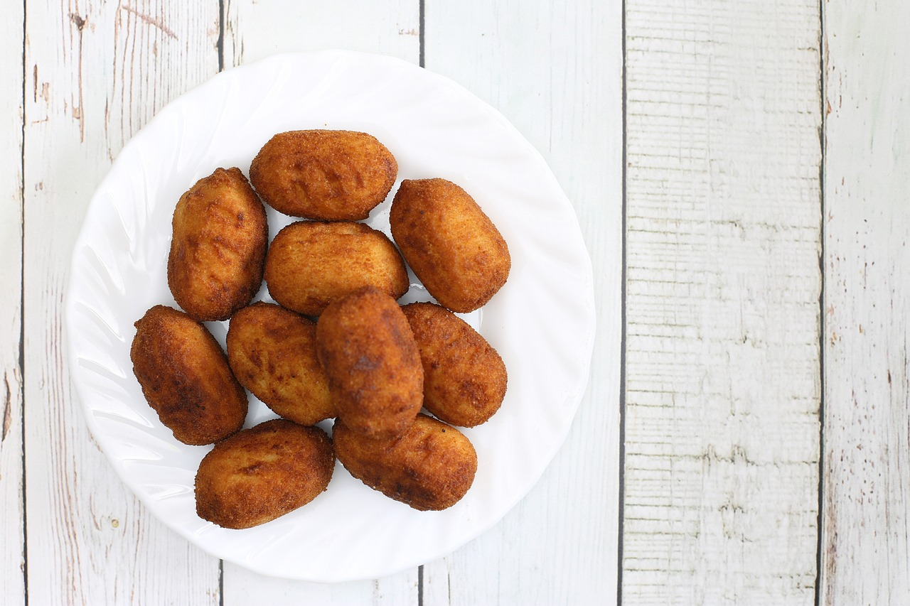

Croquetas caseras
Sabrosas y sencillas

Ingredientes:
| Ingredientes | Cantidad |
|---|---|
| Leche entera | 600 mL |
| Mantequilla | 1 cucharada |
| Harina | 1 cucharada |
| Jamón ibérico | 100 g |
| Huevo | 2 huevos |
| Pan rallado | 250g |
Pasos:
- Poner en la sartén la mantequilla y la harina
- Cuando se funda la mantequilla, echar el jamón ibérico picado
- Echar la leche
- Una vez la mezcla eche burbujas, sacarla de la sartén y dejar enfriar en una fuente
- Cuando la mezla esté fría, darle forma de croqueta envolviéndola en huevo y pan rallado